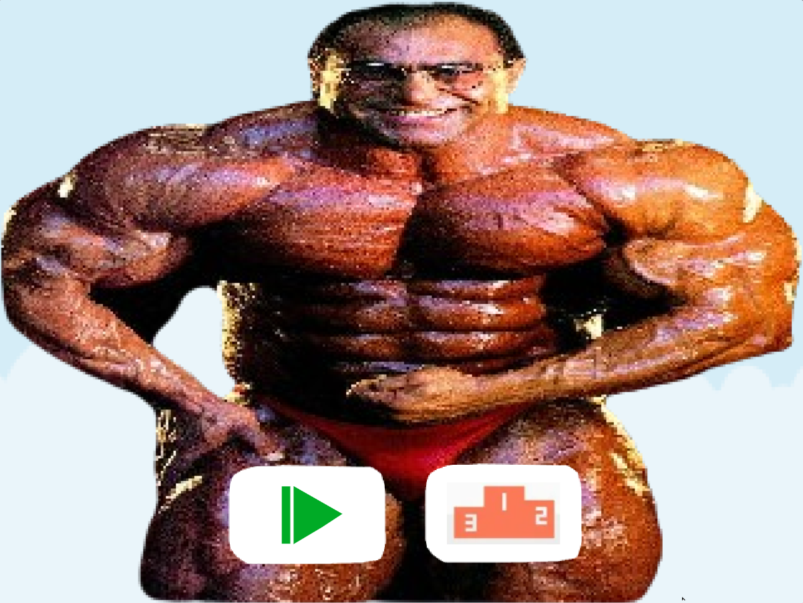

Meus projetos

Minha Biblioteca: Nasser Bird
Este projeto é um desenvolvimento feito no scratch, por blocos de comandos. Em que eu um colega, chamado Daniel, fizemos uma paródia de flappy bird com o fisiculturista Nasser

Ping Pong: Javascript
Este é um projeto feito por JavaScript pelo p5.js no ano passado nas aulas de pensamento computacional do professor Rafael.

Filmes em Cartaz: HTML
Este projeto feito em HTML nos ajuda a ver os filmes em destaque.